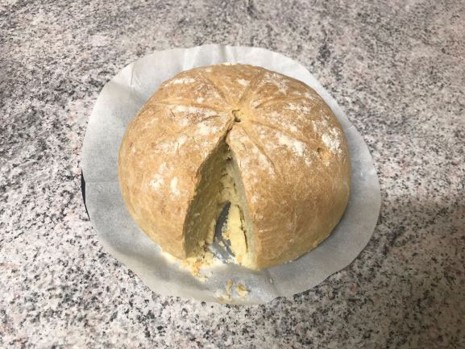

Koori Culture
Koori Cuisine
Introduction to Damper
Today, Billy has decided to make damper bread, which is a traditional Indigenous soda bread made by the Indigenous population and white settlers
in Australia for many years. It is made from flour and water, and sometimes butter. Damper would be cooked in the coals of a campfire, either directly
or with the use of a camp oven. Traditionally damper was made with a variety of native Australian seeds and nuts, and then mixing them into the damper
dough. Damper is considered an iconic Aussie dish, because it symbolises Indigenous cuisine in the nation's rich history. Damper can be made anywhere,
it doesn't matter if it's on a campfire out in bushland or in your home, if it looks like damper then it is damper. Making damper is similar to making other types
of bread, with oven-baking taking up 30 minutes and creating mixtures containing flour, water and if needed, bread.
What damper looks like (this one was made by me)


Recipe (for those who wish to make damper at home)
Ingredients
- 450g (3 cups) of self-raising flour (or regular flour is fine but add some yeast and leave the raw bread out to rise for 15 minutes before baking)
- A pinch of salt (about 1 gram will do)
- 80g chilled and cubed butter
- 185mL(3/4 cup) of water
Steps
- Preheat oven to 200 degrees Celsius and line a baking tray with non-stick baking paper.
- Mix flour and salt in a large bowl. Use your fingertips to rub the butter into the flour until the mixture looks like breadcrumbs.
- Add water into the flour mixture and use a round-bladed knife to mix until the mixture comes together. If needed, add 1-2 tablespoons of water if the mixture is dry. Use hands to bring mixture together.
- Turn dough onto a lightly floured surface and then knead it gently until smooth (should take 1-2 minutes).
- Shape mixture into an 18 centimetre wide disc and place on baking tray.
- Use sharp knife that has been dipped lightly into flour to mark 8 wedges on the top. Dust damper with a little bit of flour.
- Bake in preheated oven for 30 minutes, at least until it's cooked through and makes a hollow noise when tapped on base.
- Transfer to a wire rack for cooling. 5 minutes should do.
- Serve at room temperature or warm.
This damper recipe is from taste.com.au. Obviously there are no nuts present to reduce the risk of allergic reactions, but there is dairy in the recipe because of the butter.